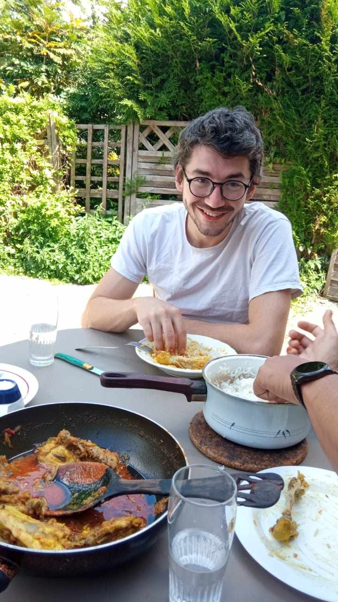

<link rel="shortcut icon" type="image/x-icon" href="../../static/favicon.ico">
<link rel="icon" type="image/x-icon" href="../../static/favicon.ico">
<link rel="apple-touch-icon" href="../../static/favicon.ico">
<link rel="stylesheet" href="../../style.css">

<figure class="single-image">
    
    <figcaption>
Moi et du poulet cuit par Rishik pour La Fete Nationale d&rsquo;Inde ~ 2023    </figcaption>
</figure>
 
